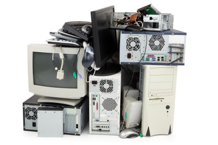
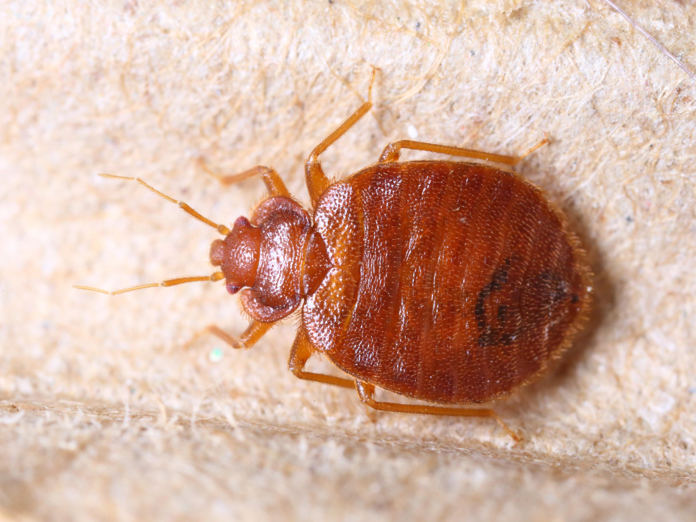
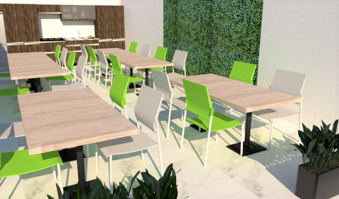

Luces Fuera
A travez de informacion que se ah estado recopilando nos hemos enterado que la luz en la mayor parte de la FES a estado fallando durante bastante tiempo lo cual ha provocado que algunos equipos de computo fallen,asi mismo la red de internet es desconectada dejando a los alumnos sin ese medio de comunicacion,¿Que Esta Haciendo la FES para solucionar esta problematica?

¿Que pasa con los camiones de la FESC?
En hechos recientes se han encontrado unos pequeños animalitos los cuales por un termino sencillo llamamos "Chinches" en la mayoria de camiones de la FESC ¿Que Soluciones proponen los directivos sobre esta situacion de emergencia sanitaria?


¿Cafeterias de Mala Calidad?
Los alumnos de la facultad que consumian en dichas cafeterias comentan que los precios de cualquier producto era demasiado caro y que a su vez se encontraban en mal estado, tambien comentan que en ellas se pueden encontrar rondando animalitos como las cucarachas o ratones los cuales no dan una buena imagen ni higiene, ¿que esta haciendo la facultad para combatir este problema?
